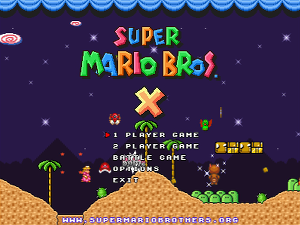

SMBX - What is it?
History:
In the year 2009, Andrew "Redigit"
Spinks began work on game: Super Mario Brothers X. Gradually the
game gathered a following among fans of the Mario game series.

Perhaps, in my opinion, it is one of the best all time fan games
about Mario. In-game game-plays from games such as Super Mario Bros,
by Super Mario Brothers 2, SMB 3, Super Mario World, Legend of
Zelda, etc. are integrated. The built-in level editor allows not
only to edit levels, along with a engine to debug them in real time,
but also allows the player to create full-fledged episodes with a
plot!
Unfortunately in 2011, Redigit received a call from the
lawyers of Nintendo. Who threatened him, and demanded he remove SMBX
and stop any further development. After some time, the
supermariobrothers.org domain was also taken over by Nintendo. So
such a remarkable project was killed.
But even so, it has
still been played. A lot of "episodes" have been made for SMBX , and
the game is still in demand. Currently the game overloads the
processor to 100% even when the user is not in action.
There
were attempts to revive the project, but they failed.
The
main mistake - the game was published UNDER the UNTWISTED BRAND.
And Redigit was making money off SMBX with distribution of ads in
installer, on forums and website. I.e. I parasitized on a brand.
Therefore Nintendo didn't like this and that's why SMBX was shut
down.
SMBX now:
Now, SMBX still is in demand, on its
basis to these port episodes and levels, and even the whole games
are created.
Read more about SMBX
Super Mario Brothers X Forum
Return to about page
Copyright © 2014 Platforger Game Engine by
Wohlstand project. All rights reserved.